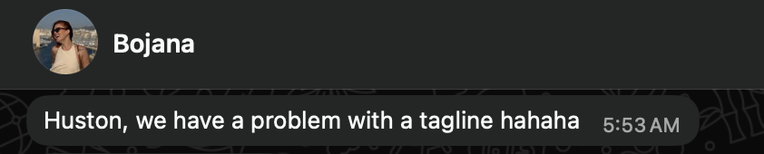

Our first LinkedIn Live started 15 minutes late because LinkedIn's streaming tools decided not to cooperate. We ended up on r/LinkedInLunatics within the first hour for our series title alone. And somewhere in the middle of all that, we walked through the exact workflow we use at our agency to repurpose a single webinar into weeks of content across LinkedIn, email, and blog.

This post is going to break down that workflow in full. Not the vibes recap (that lives on our Substack). This is the operational breakdown: what we connect, what we feed it, what the output looks like, and where humans still need to step in.
If you run webinars for your company or your clients and you are still manually writing LinkedIn posts, blog articles, and follow-up emails from scratch after each one, this is going to save you a significant amount of time every single month.
Why webinar content is the single best thing to repurpose with AI
A webinar transcript is one of the richest source documents you can hand to an AI. An hour-long webinar produces 8,000 to 12,000 words of real conversation between real people talking about real problems. That is substantially more raw material than a typical blog post outline or a content brief.
The content is also inherently original because it came from a live discussion. Nobody else has this exact conversation. Nobody else can replicate the specific insights your speakers shared. That makes it fundamentally different from asking AI to write a blog post from a generic topic prompt, where you are competing with every other person who asked the same thing.
The challenge has always been time. Turning a one-hour webinar into five LinkedIn posts, two blog articles, a newsletter recap, an email follow-up sequence, and short-form video scripts takes a content team days. By the time all of that is published, the momentum from the live event is gone and your attendees have already forgotten about it.
That is the problem we solved. Not by cutting corners on quality, but by building a workflow that gets you from raw transcript to polished, multi-format content in hours instead of days.
The two approaches: manual and automated
During the live session, we showed two distinct methods. Understanding when to use each one is important because they serve different purposes and produce different quality levels.
The manual approach (higher quality, more time)
This is what Barbara does for most agency clients, and it is the approach we recommend if content quality is your primary concern.
The setup starts with a context doc folder. Every client at our agency has a dedicated folder on the local machine that contains everything Claude needs to understand the brand. This folder gets connected to Claude Cowork or Code at the beginning of every content session.
That folder contains:
- Brand and writing guidelines with a documented tone of voice, a list of phrases to avoid, and formatting rules. For example, our guidelines explicitly ban em dashes, staccato sentence structures, passive voice where active works, and overused AI words like "shift," "gap," and "leap."
- ICP documentation describing who you are writing for, in as much detail as possible. Job titles, company sizes, industries, the problems they are trying to solve, the language they use internally.
- Previous content that performed well. Social posts, blog posts, emails, anything that demonstrates what good output looks like for this specific brand.
- Presentation decks and sales materials. Anything with the company's visual branding. This is particularly valuable because it gives Claude reference material for creating social media graphics that actually look on-brand.
- Product info, competitor positioning, demo transcripts. The more context the model has, the more specific and relevant the output will be.
Clients we have worked with for years get substantially better output than new clients because that context library has had time to grow. This is the actual competitive advantage. The tool itself is table stakes. The accumulated context is what makes the output usable.
Once the folder is connected, the workflow goes like this:
Step 1: Upload the raw transcript. Download it directly from your webinar platform (we use Riverside). Do not clean it up. Do not edit it. Feed it in raw. Claude handles messy transcripts without issue.
Step 2: Ask Claude to outline the most engaging and insightful ideas. The prompt here is conversational, not formulaic. Barbara uses a voice transcription tool (Wispr) instead of typing, and the reason is counterintuitive: when you type, you self-edit. You trim. You filter out context that the AI actually needs. When you speak, you ramble, over-explain, provide background, and sometimes contradict yourself. All of that extra context makes the output dramatically better.
Step 3: Generate first drafts. Using the outline Claude produced, ask it to write drafts for each content piece. This is where the context docs become critical. Claude is pulling from the brand guidelines, previous examples, and ICP information to match the client's voice.
Step 4: Edit like a mean editor. This is where the real work happens and where most people skip. You read every draft. You identify every sentence that sounds like generic AI writing. You tell Claude exactly what is wrong: this opening line needs to work without context, this paragraph uses a sentence structure I banned, this CTA points to the wrong page. Multiple rounds. For an important client launch post, this process can take up to an hour for a single LinkedIn post.
That editing time is not wasted time. It is the entire value proposition. If your agency is delivering first-draft AI output, your clients can do that themselves for $20 a month. The human judgment layer is what they are paying for.
The automated approach (faster, good baseline)
For situations where you need speed over perfection, or when you want a starting point that gets you 70% of the way there, we built a tool in Claude Code that automates a stripped-down version of the manual workflow.
Here is how it was built: Barbara took one of her full manual content creation sessions (the entire chat history of going from raw transcript to finished posts), told Claude to summarize the workflow, and then asked Claude Code to turn that summary into a tool. The build took about two to three hours. Neither of us writes code.
The tool accepts a webinar transcript as input and generates a Google Doc containing LinkedIn posts, a newsletter recap, short-form video scripts, and email follow-up sequences. You can customize what it produces by editing the configuration.

The output quality from the automated tool is decent but not agency-grade. It works well as a first pass. You will still want a human reviewing everything before it goes live, but you are starting from a much better position than a blank page.
The one thing most people get wrong about AI content workflows
The most common mistake we see is people treating the AI tool as the solution when it is actually just the last mile. The real work happens before you ever open Claude.
If you download our markdown file, load it into Claude Code, build the tool, and then paste in a transcript with zero context docs, you will get mediocre output. That is not the tool failing. That is you skipping the foundational work that makes the output good.
This is the same as hiring a freelance writer, giving them no brief, no brand guidelines, no examples of what you like, and then being frustrated when the first draft misses the mark.
Invest the time in building your context library. For a new client, that means spending a few hours compiling brand docs, writing guidelines, and gathering examples of content that represents the voice you want. For an existing client where you already have all of that, just organize it into a folder and connect it.
What this means for marketers worried about AI
Something that came up repeatedly during the live session is whether marketers should be concerned about their jobs. Here is our take, and it has stayed consistent across every episode we have done since.
The marketers who should be worried are the ones who were already producing mediocre work and relying on volume over quality. If you were the person who wrote generic blog posts by rewording the first page of Google results, yes, AI does that faster and cheaper now.
If your value was always in your judgment, your understanding of a specific audience, your ability to look at a piece of content and know instinctively whether it works or not, you are in a stronger position than you have ever been. Because now you can apply that judgment at a speed and scale that was not possible before.
The job is taste now. Knowing what sounds right, what a specific audience needs to hear, what the difference is between technically correct copy and copy that actually makes someone stop scrolling. That is the moat. AI cannot replicate taste. It can only amplify it.
A note on prompting: stop overthinking it
We kept hearing from attendees that they freeze when they open Claude Code or Cowork because they think they need special prompt engineering syntax. They think there is some secret format or magic words that will unlock better results.
There is not. You just talk to it. If you have ever given a brief to a freelancer, explained a project to a new team member, or left comments on a Google Doc, you already know how to prompt AI.
The actual problem is the same one it has always been: most people are not specific enough. Saying "optimize for engagement" means nothing. Saying "avoid staccato sentences, do not use the word 'bank' because this is a finance startup and the word is confusing in context, and the CTA should drive to a demo page, not a blog post" gets you somewhere useful.
The specificity of your input determines the quality of your output. That is the whole thing. There is no secret beyond that.
Claude vs ChatGPT for this specific workflow
We used ChatGPT exclusively through 2025. We switched to Claude in 2026 and the difference for content workflows specifically is substantial.
The biggest improvement: Claude actually maintains context from the docs folder throughout the entire chat. With ChatGPT, even with project files attached, we would constantly have to re-remind it to reference the brand guidelines. By the end of a long content session, ChatGPT would drift from the brand voice and we would have to course-correct. With Claude Cowork and Code, because it is pulling directly from the local context doc folder, that drift does not happen in the same way.
We do not have loyalty to any specific model. We use whatever produces the best work. Right now, for content creation workflows that require sustained context awareness across long sessions, that is Claude.
Resources and tools mentioned
- Claude Cowork and Claude Code (requires the desktop app, not the browser version)
- Wispr for voice transcription instead of typing prompts
- Riverside for webinar recording and transcript downloads
- The markdown file for the automated tool (subscribe to our Substack where we shared it in the Episode 1 recap)
Want more like this?
One email per week. Recaps, prompts, and lessons from every live session.